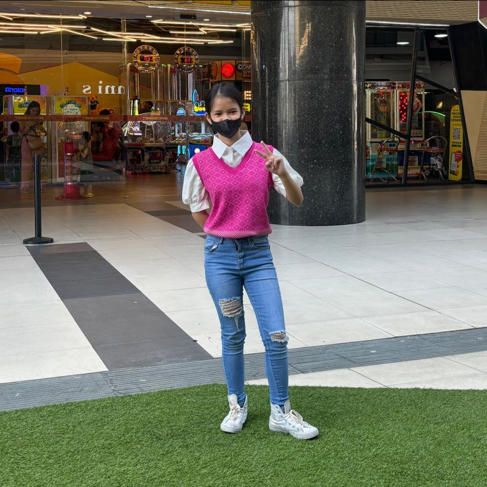

My totaly Special Slambook
 A slam book is a notebook or journal passed around among friends or classmates where everyone writes personal information, answers fun questions, and shares thoughts or messages. It usually includes questions like name, birthday, favorites, dreams, and messages to the owner. Popular in schools, slam books are a fun way to learn more about each other and keep memories.
About Me!
- Name: Channielle Jean C. Araco
- Nickname: Chanini/Channielle/Chan Chan
- Grade/Section: 9-Ruby
- Zodiac Sign: Cancer ♋
- Birthday: July 4, 2011 🦅🇺🇸
- Describe yourself in one word: Anxious lol
- Motto in life: Atleast you tried your best reaching the things you want to achieve
Favorites :D
- Favorite color:
- Orange
- Favorite food: Ramen
- Favorite subject: Ict
- Favorite movie or TV show: uhhh Kpop demon hunters
- Favorite song: Through Patches of Violet by Mili
- Favorite sport or activity: Table Tennis :D
- Favorite place to hang out: Circuit Makati (cuz its the most common place to start meetups)
🌐 Social Media Links